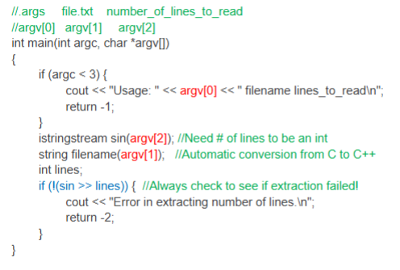

ArgcArgv
Command Line Arguments
- When we have run programs up until now, we have only run the program name on the command line
- You can write a program to allow the user to write more commands besides the program name and use that information in the program as you wish.
Command Line Arguments
In the example below, we have the program name and arguments following, separated by spaces:
- ./lab5 data1 data2 10 20 30
Main Parameters
- You give main() 2 parameters in C++ to have command line arguments. These are the only two arguments main is allowed to have.
- argc(an integer) -- "argument count"
- argv (an array of c-style strings) -- "argument values"
- You can write this in two different ways:
- int main(int argc, char **argv)
- OR int main(int argc, char *argv[])
- The only difference is that we have two ways to declare a c-style string. Both are valid.
int main(int argc, char *argv[]) {}
- argc - the number of arguments in the argv vector (vector means array in this case).
- argv[] - an array of char * (char * is a C-style string).
Where are the args?
int main(int argc, char **argv)
- argc is just the count (a simple int) - it can be useful sometimes, for example to error-check proper usage/display an error message if the executable was not launched correctly
- Arguments are in argv array, acessible via indexing. For example: argv[i] will be a c-style string containing the ith command line argument
- argv contains values at locations 0 through argc-1. (but the value at index 0 is useless most of the time - its just the executable name)
Argc
- If argc is equal to 2, then you have one argument to your program (bc your program name is the first argument on the command line)
- You can use argc to check if the user is running your program with the correct number of arguments
Argv
- Whenever you use any argv, unless you are just printing out the strings, you should convert them to C++ strings of use stringstreams to change them to other data types (ints, doubles, etc)
- string a1, a2;
- a1 = argv[1];
- a2 = argv[2];
Example Usage

Convert Args with String Streams

Error Checking
It is good practice to check argc at the beginning of the program to verify the user ran the program with the correct number of arguments.
Always check argc before argv.